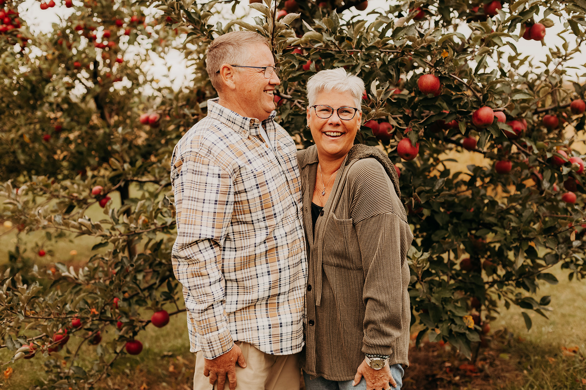

Meet the Owners
The Kane’s Roost fruit farm was founded in 2014 when Pat and Maura Kane bought it as their forever home. As retired military, they were ready to settle down and called Macon, Michigan their home.Pat and Maura have planted over 400 fruit producing trees. They also have a large vegetable garden, blueberries, blackberries and honey bee hives. From August to November, the farm has a self serve farm stand. On it, one can find peaches, plums, pears and a wide variety of apples. They also sell their homemade applesauce, homegrown vegetable and raw honey. If you find yourself in south east Michigan stop by and say hellow
Mill's Pennington-Cook House
The beautiful farmhouse was built in 1860 by the Mills family of Macon, Michigan. Its sits on 17 acres of beautiful farm land and boasts a one acre swimming/fishing pond and three beautiful barns. Pat and Maura and their 3 dogs would love to visit with you and show you their beautiful family farm.